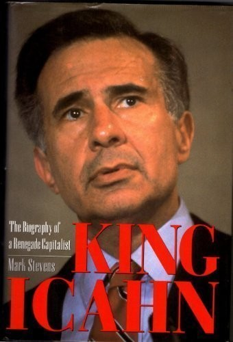

卡尔·伊坎（Carl Icahn）1936年生于纽约皇后区法罗克维，1957年从普林斯顿大学哲学系毕业，随后读了两年医学院，又服过兵役。1961年，他进入Dreyfus & Co.做股票经纪，后来专做期权；1968年以自有资金和亲属支持创立Icahn & Co.。期权经纪经历训练他把价格、期限和控制权分开计算，后来收购中的小额股权也常被他用成获取董事席位或迫使公司谈判的工具。马克·史蒂文斯（Mark Stevens）的《King Icahn》由Dutton于1993年出版，共326页，记录伊坎从期权经纪人转向收购、代理权争夺和杠杆交易的前二十五年。浙江大学出版社2017年出版刘骏翻译的简体中文版《华尔街之狼：金融之王卡尔·伊坎传》，后来又推出修订版。书名中的“王”描述的是1980年代收购战中的地位，并不是伊坎本人写的回忆录。史蒂文斯采访了伊坎、合作伙伴和对手，叙事紧贴交易现场，因此能还原报价、董事会表决和融资安排，也继承了当事人口述可能偏向自己的局限。
全书最完整的案例是环球航空（TWA）。伊坎1985年取得控制权，借助与工会的谈判和董事会表决击退竞争者，1988年又通过杠杆交易把公司私有化。该交易向伊坎一方支付约4.69亿美元，同时给TWA增加约5.4亿美元债务；1991年公司以4.45亿美元出售重要的伦敦航线，1992年申请破产保护，养老金缺口一度超过十亿美元。把4.69亿美元直接写成伊坎最终“净赚”并不准确：当年的《时代》报道指出，他后来持有的债券和优先股大幅贬值，伊坎本人声称这项投资至少亏掉一亿美元。史蒂文斯保留了这种矛盾——伊坎能在交易结构中先收回资本，航空公司、员工和养老金却继续承受高杠杆的后果。
其他章节覆盖Phillips Petroleum、USX、Texaco、Hammermill Paper和Dan River等争夺。伊坎通常先买入足以构成威胁的股份，再要求董事会出售资产、回购股票或接受收购；如果公司溢价买回他的持股，他就获得后来被称作“绿票讹诈”（greenmail）的收益。Phillips一役中，他先提出高额收购方案，最终由公司重组并回购相关股份；在USX和Texaco，他又把公开报价、诉讼和代理权压力组合使用。每一场行动都要先计算现有资产价值、潜在买家的支付能力，以及公司为保持独立最多愿意付出多少。1987年美国税法开始对这类绿票收益征收50%的消费税，说明这种策略在当时已经引发制度反应。书中也展示了代理权、要约收购、垃圾债融资和工会联盟如何互相配合：伊坎的优势不只是估值判断，而是能让其他参与者相信，他确实愿意把威胁执行到底。
《柯克斯书评》把本书概括为一幅“sympathetic if unsparing portrait”——对传主抱有理解，却没有回避其手段和代价。《出版人周刊》则强调作品像紧凑小说一样围绕财务赌注展开；这种节奏有助于理解谈判，却也容易让读者把成交本身误当成价值创造。这个评价点出阅读边界：史蒂文斯详细重建谈判与融资，但对伊坎的私人生活着墨很少；全书在1993年截止，无法说明他后来在Apple、eBay或Icahn Enterprises的行动。它适合用来研究股东行动主义尚未形成标准化委托书、白皮书和治理话语之前的原始形态。TWA尤其提醒读者，把交易者收益、公司资本结构、员工养老金和长期经营结果放在同一张表里，才看得清“释放股东价值”究竟把成本转移给了谁。